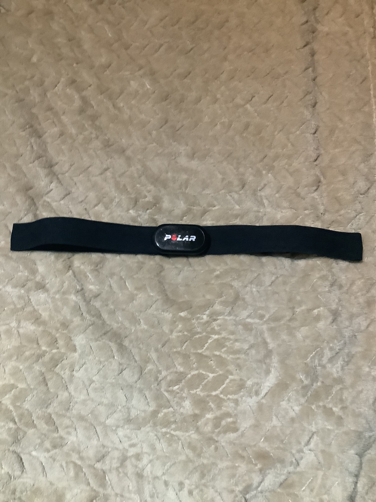
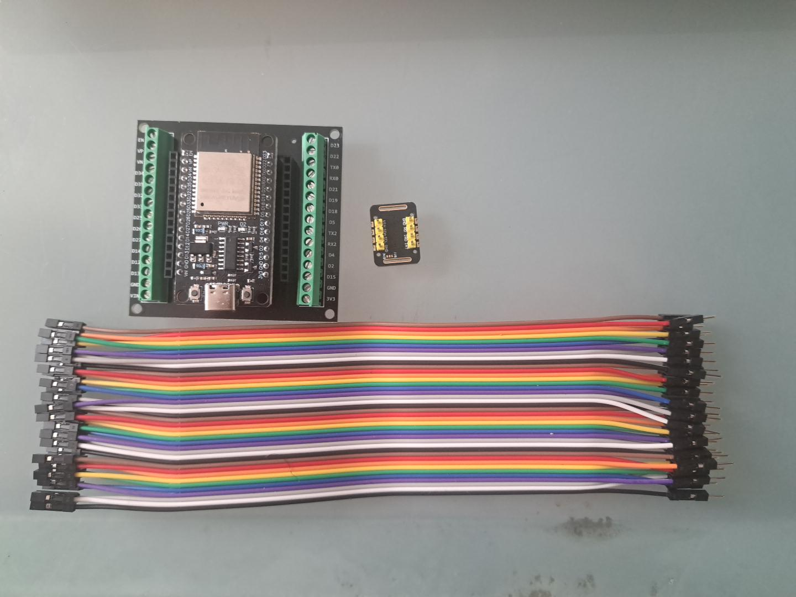
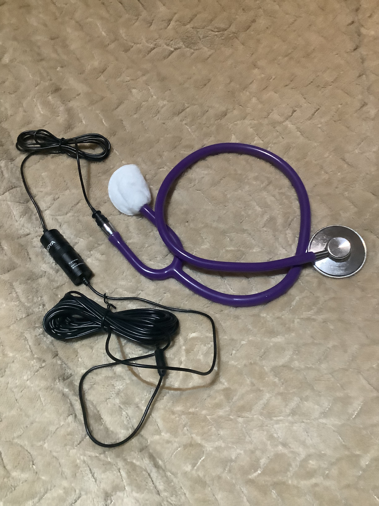

Synthetic RR-derived heart-rate reference
Synthetic RR-derived estimate
A rate derived from the synthetic ECG-like beat times, used as the reference series in the forecast comparison.
We compare several ways of measuring cardiovascular physiology with computer models and heart-rate forecasts. The research used real recordings; the interactive signals below are synthetic, and real-data results appear separately.
A rate derived from the synthetic ECG-like beat times, used as the reference series in the forecast comparison.
Generated values from a generic channel-modulation display model; not a camera or skin model.
Estimator outputs are separate from the synthetic reference.
One-second RMS features describe acoustic energy. Cross-device timing is approximate; ECG beat synchrony is unavailable.
Blind peaks are spectral components. The reference-guided candidate is diagnostic and reference-informed; none identifies S1/S2 or valve events.
No single sensor is treated as the patient. Each observes physiology through a different measurement process, so comparing them helps separate cardiovascular changes from effects introduced by the sensor.
The real study used a Polar H10 chest strap as an independent ECG-derived heart-rate reference and an AD8232 ECG board connected to an ESP32 as a second electrical measurement. These help establish timing and heart-rate agreement; they do not describe a complete cardiovascular state. The trace above is synthetic and RR-derived.

MAX30102 sensors measured changes in red and infrared light at the skin. Contact PPG provides an optical view of the pulse and helps distinguish limitations in camera sensing from changes in the underlying cardiovascular signal.

An iPad camera recorded facial red, green and blue intensity. CHROM, POS and luminance-based methods looked for cardiac-rate information in those colour signals. Cardiac-rate-consistent information can remain present even when the strongest spectral component is not cardiac, making it hard to identify blindly.
A stethoscope coupled to a lavalier microphone recorded acoustic energy. The study examined spectral and envelope features, while avoiding claims about individual valve events without adequate synchronisation and validation.

Pulse aortic inflow and OpenBF external carotid flow, shown in native flow units.
Pulse aortic and OpenBF external carotid pressures, shown in mmHg.
The model-cycle phase is independent of the synthetic recovery demonstration.
A validated vascular-to-cutaneous observation model is not included in this episode. The research record includes conditional contact-reflectance and visible-camera control experiments using generic phantoms and declared transfer assumptions; these do not establish participant-specific facial rPPG. No synthetic camera trace is shown here.
Pulse state → OpenBF vascular outputs → cutaneous transfer not established → no synthetic rPPG claimPulse represents whole-body physiological state and transitions. Here it supplies an inspectable mechanistic projection under declared assumptions, rather than acting as a black-box predictor.
OpenBF models one-dimensional arterial blood flow. Coupled downstream of Pulse, it provides higher-resolution vascular pressure and flow waveforms.
This work does not include a validated link from an OpenBF carotid waveform through facial microcirculation and tissue optics to camera RGB. The model episode therefore makes no claim to generate synthetic rPPG.
Pulse is an HR-constrained projection from a frozen 72-candidate exercise–recovery family, not an individual state estimate. TimesFM-3 was run offline on the synthetic RR-derived rate series.
Frozen Pulse 4.3.2 StandardMale baseline family: exercise intensity fractions 0.05–0.30, durations 30/45/60 s, cessation-to-origin delays 0/5/10/15 s, equal prior, no extra recovery parameters. Candidate weights use six synthetic context points at 5 s intervals and a 10 bpm model-discrepancy scale. Held-out values are excluded from conditioning. The ensemble interval is descriptive, not calibrated.
TimesFM-3 receives a heart-rate history and forecasts that observed data series. Pulse projects how a represented cardiovascular system evolves under stated assumptions and interventions. Those are different kinds of output.
This chart uses synthetic values: only the first 30 seconds condition the forecasts, and later synthetic points are used for scoring. In the separate real-data recovery experiment, both approaches received the first 30 seconds of H10 heart-rate information and were compared with the following 30 seconds and with persistence and linear-trend baselines. Under the frozen Pulse exercise-recovery assumptions, the candidate family did not adequately represent the observed recovery trajectories. It was left unchanged rather than tuned against the held-out future.
| Recovery | TimesFM-3 | Pulse projection | Persistence | Linear trend |
|---|
These aggregate findings come from the real-data experiments. They are separate from the synthetic traces and forecast example in the other tabs; those did not produce these research results.
The research repository contains protocols, frozen assumptions, model configuration, Pulse/OpenBF coupling code, analysis scripts, tests and aggregate research results.
This site contains a static interactive demonstration and synthetic data bundle. It does not publish private physiological recordings or run the physiology and machine-learning models in your browser.
Pulse represents whole-body physiology; OpenBF models arterial flow; TimesFM-3 forecasts a measured time series. The browser charts present precomputed signals and outputs. The renderer displays scientific data; it does not generate the physiology.